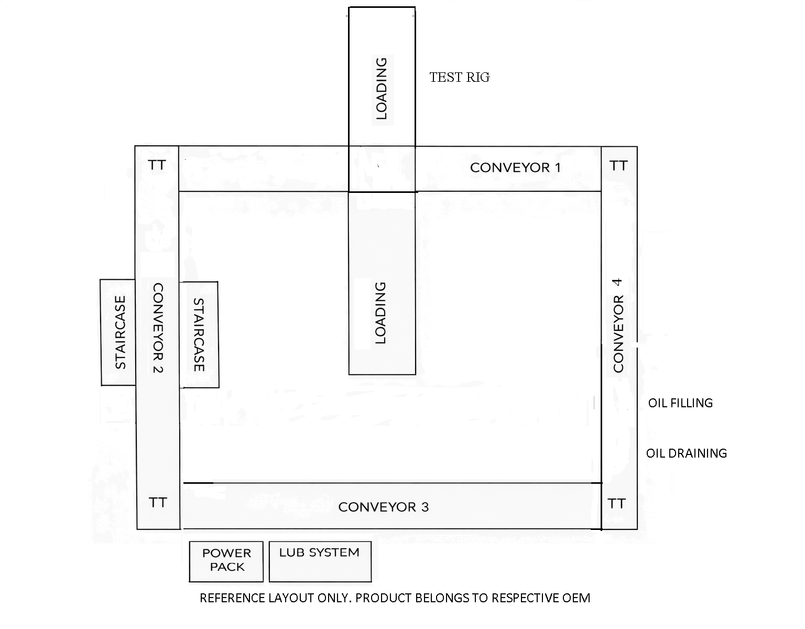

EV Motor Tranaxle Test Rigs
Overview
An EV motor transaxle test rig is a specialized, high-precision laboratory system designed to evaluate the performance, durability, and efficiency of electric vehicle powertrain components.
Steps of Process in End of Line Testing
- 1. Loading of EV motor Transaxle in Pallet
- 2. Oil Filling using Quick Release Coupling
- 3. Manual Shaft engage onto the EV motor
- 4. Transfer From Conveyor 2 to Conveyor 1 using (Transfer Table)
- 5. Test Rig Loading two side of the shaft using Dynamometers with Power supplied on motor of UUT
- 6. After testing the UUT, pallet transfer from Conveyor 1 to Conveyor 3.
- 7. Waiting Station is provided in Conveyor 2 and Conveyor 3
- 8. In oil draining, oil drain port was unplugged from Unit Under Test, seperate oil drain setup is provided to Suction the Dirty Oil

Role: Contributed as a supporting team member in designing Test Rigs and Conveyors.
← Back to Home